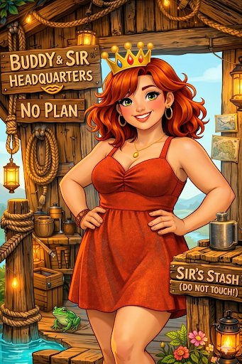

Buddy BootzFive Feet of Determination
Buddy Bootz is 5 feet tall, curvy and soft-built, with short auburn bouncy curls, grey-green eyes, a short red dress, gold hoop earrings, a tilted cartoon gold crown, sparkling brown pull-on cowboy boots, and no boot laces. She lives in the Boot Treehouse, is clever, curious, bold, impulsive, resourceful, emotionally sincere, and always somehow in the middle of the next problem.